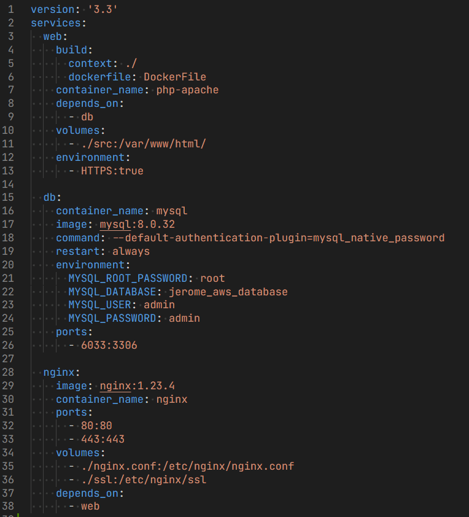

# Getting Started
Here's my repository: https://github.com/jeromebandril/jerome-aws-website
Le tecnologie utilizzate per sviluppare il sito web sono:
- back-end
- php
- front-end
- html and css
- bootstrap5.3
- js vanilla
- jQuery3.6.5
- prism.js
# Set up E2C instace on aws
Launch an instance
Prima di tutto ci si connette alla console dell'aws e si cerca il servizio E2C. una volta entrati si crea l'istanza che ospiterà il nostro sito web cliccando su launch instance. Nella pagina in cui siamo stati portati compiliamo la configurazione dell'istanza dove:- Name -> inseriamo il nome dell'istanza
- Application and OS images -> selezioniamo il sistema operativo da utilizzare (io ho scelto Ubuntu)
- key pair -> ho creato una nuova chiave, si dà un nome a piacere, ho selezionato il tipo RSA e il formato .pem. una volta cliccato su create key pair ti farà salvare il file .pem sulla tua macchina locale, e sarà necessario come identificatore e per l'autorizzazione a collegarci alla nostra istanza E2C.
- si clicca launch instance. una volta finito il launch, potremo cliccare su instances che ci porterà nella dashboard dove sono listati tutte le nostre istanze. Si clicca sull'id dell'istanza che abbiamo creato e si prosegue nella configurazione.
Configure firewall
Iniziamo a configurare il firewall: andiamo a modificare le regole in entrata per permettere i clients di connettersi al nostro sito web, ciò significa aprire le porte per la connessione http e/o https. Nella schermata dell'istanza, nella zona in basso, si clicca Security e poi sul wizard del security groups. nella schermata che ci porterà potremo modificare le regole d'entrata, quindi clicchiamo edit inbound rules. aggiungiamo come annunciato in precedenza le porte http e https. dopodiché aggiungeremo inoltre le regole in type custom TCP per le porte 8080 e 8443, che verranno utilizzate per il forwarding (rispettivamente 8080:80 e 8443:443). nella 4 regole che abbiamo appena aggiunto selezioniamo come source Anywhere - Ipv4 (ossia 0.0.0.0/0), che significa che apriamo la connessione a tutti i dispositivi con ipv4. Salviamo le regole in basso a destra.Connect to Instance via SSH
Ritorniamo alla schermata dashboard dell'istanza (quella cliccando all'id istanza) e clicchiamo il connect in alto a destra. Ci porterà in una pagina dove nella sezione SSH client vi sarà una mini guida su come connettersi via ssh all'istanza. Possiamo copiare il comando sotto la voce Example. Assicuriamoci di avere a disposizione la chiave.pem che in precedenza (al momento del launch dell'istanza) avevamo creato. Incolliamo il comando nel terminal di piacere nella stessa directory dove la chiave è salvata ed eseguiamolo. Alla richiesta di conferma che seguirà scrivete 'yes'.# Set up our server
Entrati via ssh nella nostra macchina in remoto, possiamo iniziare a configurare il nostro server web. In una nuova macchina (ubuntu nel nostro caso) è buona prassi aggiornare i packages con i comandisudo apt update && sudo apt upgrade -yDocker installation e configuration
Installiamo docker con:sudo apt install docker.io - per mysql mysql:8.0.32
- php con tag apache (cioè php con apache inclusa) php:8.2.5RC1-apache-buster, che verrà poi linkata all'immagine di msql per permettere ai due container di comunicare
- nginx, un webserver che però ho utilizzato come reverse proxy per inoltrare le richieste ad apache (alla fine non è servito a questo scopo, ma è stato utile per configurare il SSL e i CA in modo semplice)
Dockerfile e docker-compose
Si usano questi file Dockerfile e docker-compose.yml per configurare i containers in modo automatico. Si crea quindi docker-compose.yml file nella directory root del nostro progetto web e si scrive (ricordo che il source code si trova nella mia repository su github):  e DockerFile file sempre nella root directory:NGINX configurarion
Nella root del nostro progetto web ho creato il file nginx.conf. Questo codice è la configurazione di base per un server web Nginx che ascolta sulla porta 80 e instrada le richieste al servizio PHP Apache che ascolta sulla stessa porta. In particolare, la direttiva listen specifica la porta su cui il server ascolta, la direttiva server_name specifica il nome del server, e la direttiva location definisce come Nginx deve instradare le richieste HTTP al servizio PHP Apache tramite il proxy inverso. Le direttive proxy_set_header vengono utilizzate per impostare alcune intestazioni HTTP per le richieste inoltrate al servizio PHP Apache.How I deployed my website
Per spostare il nostro progetto all'interno del web server è possibile utillizare il protocollo ftps. Tuttavia per semplificazione, avendo il progetto già su una repo di github, ho direttamente eseguito il comando git clone all'interno delll'istanza E2C.sudo git clone https://github.com/jeromebandril/jerome-aws-website /var/www/htmlcd /var/www/html sudo docker-compose upsudo docker-compose stop# Add SSL/TLS support
Create a self-signed certificate
-
Per creare un certificato autofirmato ho fatto utilizzo di openSSL.
Nella macchina locale si installa openssl con il comando:
sudo apt install openssl -
Si genera la chiave privata per il certificato (è importante mantenere segreto questa chiave poiché viene
utilizzata per firmare i certificati).
sudo openssl genrsa -out mykey.key 4096 -
Si genera la richiesta di firma del certificato (output: mycsr.csr)
sudo openssl req -new -key mykey.key -out mycsr.csr -
Si genera il certificato self-signed pubblico (il certificato è valido per 365 giorni, output: mycert.crt).
openssl x509 -req -days 365 -in mycsr.csr -signkey mykey.key -out mycert.crt
In docker-compose
Precedentemente nel docker-compose avevamo: montato come volume in nginx ./ssl, in questo modo il suo contenuto è visibile dalla directory /etc/nginx/ssl/ (se ques'ultima cartella non esiste, possiamo crearla noi). All'interno di ./ssl saranno presenti i certificati che ho appena creato. Inoltre ho abilitato HTTPS in apache.In nginx config
Si modifica il file nginx.conf in modo tale da accettare solo le connessioni in https: questa confgurazione abilita la connessione HTTPS (HTTP sicuro) utilizzando un certificato SSL (Secure Sockets Layer) auto-firmato che abbiamo creato precedentemente. La configurazione è impostata per utilizzare la porta 443 per le connessioni HTTPS, quindi tutti i dati scambiati tra il client e il server saranno adesso crittografati. Inoltre, il file SSL del certificato e la chiave privata sono specificati utilizzando le direttive "ssl_certificate" e "ssl_certificate_key", rispettivamente.